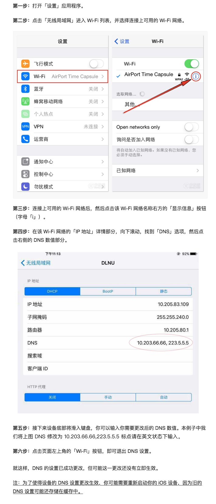

Dnat DNS
- Note:在您访问被阻挡的网站时，请使用 https 协议，例如 https://www.instagram.com ,或者直接点击网站下方链接访问
- 由于目前机房网络尚未提供 ipv6 线路，所以此 dns 仅对ipv4 网络作用，WIFI、教学区网络可直接使用，生活区有线网络使用前需要禁用 ipv6。
- Dnat DNS 能够突破封锁线，使您能够直接访问 Google 的各项服务，使用 Scholar 获取最先进的科研资料。
- 本服务不会跟踪、存储、更改您的解析数据。
- 部分数据经过反向代理，请勿涉及敏感内容。
- 隐私服务保证不向第三方出售公共 DNS 数据。
- E-mail:2008.zhengxing@gmail.com
使用方式
Windows系统
一、Windows 7/Windows 8/Windows 10
1. 单击任务栏右下角的网络连接图标，然后单击“打开网络和共享中心”。

2. 在网络和共享中心单击左侧的“更改适配器设置”。

3. 右键单击正在联网需要更改的有线连接或无线连接，然后单击“属性”。 需要管理员权限，如果系统提示您输入管理员密码或进行确认，请键入该密码或提供确认。

4. 在“网络”选项卡，“此连接使用下列项目”下，取消 ipv6 协议前方的勾，双击“Internet 协议版本 4 (TCP/IPv4)”。

5. 在“常规”选项卡，单击“使用下面的 DNS 服务器地址”，然后在“首选 DNS 服务器”中输入 10.203.66.66 ，在“备用 DNS 服务器”中输入 223.5.5.5 ，然后单击“确定”保存退出。

二、Windows XP
1. 在开始菜单中选择“设置”，然后单击“网络连接”。
2. 在网络连接窗口中选择要设置的网络连接，右键单击，然后单击“属性”。
3. 在”常规”选项卡，取消 ipv6 协议前方的勾，双击“选择internet协议（TCP/IP）”，打开属性窗口。
4. 在”常规”选项卡下，单击“使用下面的DNS服务器地址”， 在“首选 DNS 服务器”中输入 10.203.66.66 ，在“备用 DNS 服务器”中输入 223.5.5.5 ，然后单击“确定”保存退出。
Linux系统
1. 请先切换至root用户进行操作。另外请保证服务器能正常访问公网UDP及TCP 53端口。

3. vim /etc/resolv.conf，将首选及次选nameserver分别配置为10.203.66.66 和 223.5.5.5 ，保存后退出：

4. 如服务器上启动了nscd服务，建议关闭掉该服务或将该服务的域名缓存功能关闭，以避免出现异常。关闭域名缓存方法：
vim /etc/nscd.conf

修改完成之后重启nscd服务即可。
Mac系统
1. 在苹果菜单选择“系统偏好设置”。

2. 单击“网络”图标。

3. 从列表中选择想要修改或当前正在使用的网络连接服务（例如 WI-FI或以太网），然后点击“高级”。

4. 选择DNS标签，单击“DNS服务器”左下角的“+”，添加 10.203.66.66 和 223.5.5.5 ，并将 10.203.66.66 移到最上方，然后单击右下角的“好”。
IOS系统
